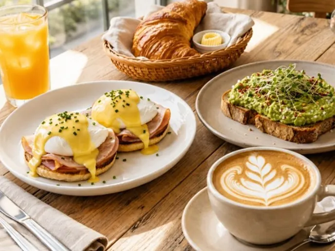

De 7 beste plekken om te ontbijten en brunchen in Nijmegen
Bijgewerkt op 21 november 2026.
Uitgebreid ontbijten op zaterdag, een lange brunch op zondag of gewoon een croissant voor je werk: in Nijmegen kan het op veel plekken. Wij kozen er zeven die elk iets anders goed doen. Van een New Yorkse brunch aan de Kannenmarkt tot een Turks ontbijt met schaaltjes om te delen. Zeven dus, geen tien: dit zijn de plekken waar het ontbijt echt de hoofdrol speelt.

Zo hebben we gekozen
We lazen in oktober 2026 de websites van de lunchrooms, cafés en restaurants in onze bedrijvengids. We zochten plekken waar je echt kunt ontbijten of brunchen, niet alleen koffie met iets lekkers. We letten op de kaart, hoe lang het ontbijt duurt, of je moet reserveren en wat een zaak bijzonder maakt.
Goed om te weten: openingstijden rond de feestdagen wijken vaak af. Kijk even op de site als je rond kerst wilt gaan brunchen.
1. Down Town: brunch zoals in New York
Grote deuren, marmeren tafeltjes en een kaart vol brunchklassiekers: Down Town aan de Kannenmarkt voelt een beetje als een café in New York. Je bestelt pancakes, een açaí bowl met vers fruit, avocado toast of een eggs benedict met bacon of zalm.
De koffie wordt gezet met bonen van Blommers, met de melk die jij wilt. Uit de eigen bakery komen scones, croissants en taartjes. Reserveren kan niet, dus je loopt gewoon binnen. Down Town is open van dinsdag tot en met zondag, tot vijf uur. Bij zon zit je op het terras aan het pleintje.
Goed voor: een spontane brunch in het weekend.
2. Madame Liberty: pancakes om vier uur
Bij Madame Liberty aan het Vierdaagseplein stopt de brunch niet om twaalf uur. De hele dag eet je hier eitjes zoals jij ze lekker vindt, avocadotoast, hoge stapels pancakes en vers gebak, met een vers sapje erbij.
Aan de lange tafels zitten vrienden die een luie zondag maken, maar ook mensen met een laptop. Ook met een groep kun je hier terecht. Madame Liberty is elke dag open van half elf tot zes uur. Een tafel reserveer je online.
Goed voor: uitslapers en een lange, luie zondag.
3. The Lobby: Turkish eggs en glutenvrij brood
In The Lobby aan de Mariënburg zak je weg in een fijne stoel met een flat white. Op de kaart staan Turkish eggs, pancakes met kaneel, burrata op zuurdesem en zelfs mapo tofu noodles. In het weekend zijn er cinnamon buns.
Eet je vegan of glutenvrij, dan zit je hier goed: er staan gerechten voor je op de kaart en er is glutenvrij brood. Daarnaast zijn er huisgemaakte smoothies en verse thee. The Lobby is elke dag open van negen tot vijf.
Goed voor: wie vegan of glutenvrij eet.
4. Eetcafé My Way: een Turks ontbijt om te delen
Zin in een tafel vol kleine schaaltjes? Bij Eetcafé My Way in de Arend Noorduijnstraat bestel je een Turks ontbijt met kaas, olijven, roerei en vers brood. Met z'n tweeën kies je de serpme kahvaltı, het uitgebreide ontbijt waar je thee bij drinkt zoveel je wilt.
Liever iets warms? Probeer menemen met sucuk, Turkse roerei met tomaat en pittige worst. Ontbijt en lunch zijn er tot drie uur, van maandag tot en met zaterdag. Op zondag is de zaak dicht. Kom je met een groep, bel dan even om te reserveren.
Goed voor: samen ontbijten en alles delen.
5. Atelier: een brunch die uitloopt
Atelier in de Van der Brugghenstraat, vlak bij het Hertogplein, is een bar die de hele dag open is. 's Ochtends eet je er frisse, gezonde gerechten en hartige brunchklassiekers, met goede koffie of een vers sapje.
Het mooie: je hoeft niet weg als de brunch klaar is. Later op de dag gaat de kaart over op barfood, met een cocktail, wijn of speciaalbier. Atelier is open van dinsdag tot en met zondag, van de ochtend tot laat. Reserveren kan online. Boven de bar zit een klein hotel, handig als je logees krijgt.
Goed voor: een brunch met vrienden die overgaat in een borrel.
6. Fresca: ontbijt in de ochtendzon
Fresca is een knusse koffie- en ontbijtzaak in de Van Broeckhuysenstraat, met een terras waar 's ochtends de zon op staat. Het ontbijt staat de hele dag op de kaart, met gezonde en minder gezonde keuzes, zelfgebakken taart, verse sappen en smoothies.
Voor ouders is dit een fijne plek: er is een aparte kidskaart en naast het terras ligt een grasveldje waar kinderen kunnen spelen. Heb je een allergie of ben je zwanger, dan denkt het team met je mee. Fresca is elke dag open van acht tot zes. Reserveren hoeft niet, alleen voor een high tea.
Goed voor: ouders met jonge kinderen.
7. Lunchbar de Viking: stevig ontbijten, hond mag mee
Aan het eind van de Lange Hezelstraat houden ze van stevig eten. Bij Lunchbar de Viking ontbijt je met avocadotoast met ei, en er zijn genoeg vega en vegan opties. De koffie komt van Vascobelo en de taarten bakken ze zelf.
In de winter zit je in de knusse huiskamer, in de zomer op het terras. Je hond is welkom, en van maandag tot en met donderdag mag je er met je laptop werken. De Viking is elke dag overdag open, op maandag vanaf half twaalf. Met zes personen of meer kun je reserveren.
Goed voor: wie zijn hond meeneemt of na het ontbijt de Hezelstraat in wil.
Ook goed om te ontbijten
- Brasserie Jolie aan de Daalseweg in Nijmegen-Oost: ontbijt en lunch uit eigen keuken, altijd glutenvrij brood en je hond mag mee. Op dinsdag dicht.
- Brood op de Plank in de Castellastraat in Bottendaal: biologisch brood uit de eigen bakkerij, met het Vegan Friendly-keurmerk.
- Villa Voorstad aan de Marialaan: een stadsbrasserie in Nijmegen-West waar je van ontbijt tot diner terechtkunt.
- De Achtertuin op het NYMA-terrein: hier staat elke maand een bottomless brunch op de agenda.
Alle lunchrooms staan in de bedrijvengids onder lunch. Meer zin in koffie dan in eten? Lees dan de 10 beste koffiebars in Nijmegen.
Meer in onze gids lunch, ontbijt en high tea in Nijmegen.
Veelgestelde vragen
Waar kun je in Nijmegen de hele dag ontbijten?
Bij Madame Liberty aan het Vierdaagseplein, Down Town aan de Kannenmarkt en Fresca in de Van Broeckhuysenstraat staat het ontbijt de hele dag op de kaart.
Waar ontbijt je op zondag in Nijmegen?
Down Town, Madame Liberty, The Lobby, Fresca, Atelier en Lunchbar de Viking zijn op zondag open. Eetcafé My Way is op zondag dicht.
Waar kun je een Turks ontbijt eten in Nijmegen?
Bij Eetcafé My Way in de Arend Noorduijnstraat, tot drie uur 's middags. Met z'n tweeën kun je de uitgebreide serpme kahvaltı bestellen.
Waar ontbijt je glutenvrij of vegan in Nijmegen?
The Lobby aan de Mariënburg heeft vegan en glutenvrije gerechten en glutenvrij brood. Brasserie Jolie aan de Daalseweg heeft altijd glutenvrij brood, en Lunchbar de Viking heeft vegan opties.
Waar kun je een kerstbrunch doen in Nijmegen?
Dat verschilt per jaar. Kijk rond de feestdagen op de site van je favoriete brunchplek of bel even. Olround aan de Heyendaalseweg noemt op de eigen site een kerstbrunch rond de feestdagen. Lunchbar de Viking is op eerste en tweede kerstdag dicht.